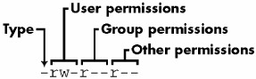
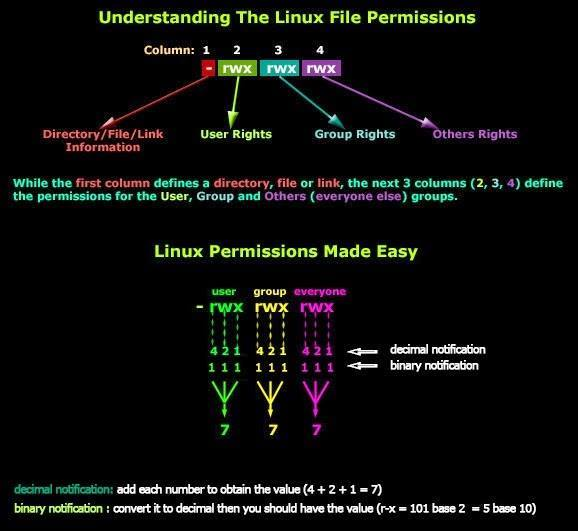

I've never really got how chmod worked up until today. I followed a tutorial that explained a big deal to me.
For example, I've read that you've got three different permission groups:
u)g)o)Based on these three groups, I now know that:
I've also learned that you've got the following permissions:
r)w)x)I created a directory to test my newly acquired knowledge:
mkdir test
Then I did some tests:
chmod u+rwx test/
# drwx------
chmod g+rx test/
# drwxr-x---
chmod u-x test/
# drw-r-x---
After fooling around for some time I think I finally got the hang of chmod and the way you set permission using this command.
I still have a few questions:
d at the start stand for?d? (As you only have 7=4+2+1 7=4+2+1 7=4+2+1)0777 instead of 777 to set their permissions?But as I shouldn't be asking multiple questions, I'll try to ask it in one question.
In UNIX based system such as all Linux distributions, concerning the permissions, what does the first part (d) stand for and what's the use for this part of the permissions?
I’ll answer your questions in three parts: file types, permissions, and use cases for the various forms of chmod.
The first character in ls -l output represents the file type; d means it’s a directory. It can’t be set or unset, it depends on how the file was created. You can find the complete list of file types in the ls documentation; those you’re likely to come across are
-: “regular” file, created with any program which can write a fileb: block special file, typically disk or partition devices, can be created with mknodc: character special file, can also be created with mknod (see /dev for examples)d: directory, can be created with mkdirl: symbolic link, can be created with ln -sp: named pipe, can be created with mkfifos: socket, can be created with nc -UD: door, created by some server processes on Solaris/openindiana.chmod 0777 is used to set all the permissions in one chmod execution, rather than combining changes with u+ etc. Each of the four digits is an octal value representing a set of permissions:
suid, sgid and “sticky” (see below)The octal value is calculated as the sum of the permissions:
For the first digit:
suid is 4; binaries with this bit set run as their owner user (commonly root)sgid is 2; binaries with this bit set run as their owner group (this was used for games so high scores could be shared, but it’s often a security risk when combined with vulnerabilities in the games), and files created in directories with this bit set belong to the directory’s owner group by default (this is handy for creating shared folders)root (see /tmp for a common example of this).See the chmod manpage for details. Note that in all this I’m ignoring other security features which can alter users’ permissions on files (SELinux, file ACLs...).
Special bits are handled differently depending on the type of file (regular file or directory) and the underlying system. (This is mentioned in the chmod manpage.) On the system I used to test this (with coreutils 8.23 on an ext4 filesystem, running Linux kernel 3.16.7-ckt2), the behaviour is as follows. For a file, the special bits are always cleared unless explicitly set, so chmod 0777 is equivalent to chmod 777, and both commands clear the special bits and give everyone full permissions on the file. For a directory, the special bits are never fully cleared using the four-digit numeric form, so in effect chmod 0777 is also equivalent to chmod 777 but it’s misleading since some of the special bits will remain as-is. (A previous version of this answer got this wrong.) To clear special bits on directories you need to use u-s, g-s and/or o-t explicitly or specify a negative numeric value, so chmod -7000 will clear all the special bits on a directory.
In ls -l output, suid, sgid and “sticky” appear in place of the x entry: suid is s or S instead of the user’s x, sgid is s or S instead of the group’s x, and “sticky” is t or T instead of others’ x. A lower-case letter indicates that both the special bit and the executable bit are set; an upper-case letter indicates that only the special bit is set.
Because of the behaviour described above, using the full four digits in chmod can be confusing (at least it turns out I was confused). It’s useful when you want to set special bits as well as permission bits; otherwise the bits are cleared if you’re manipulating a file, preserved if you’re manipulating a directory. So chmod 2750 ensures you’ll get at least sgid and exactly u=rwx,g=rx,o=; but chmod 0750 won’t necessarily clear the special bits.
Using numeric modes instead of text commands ([ugo][=+-][rwxXst]) is probably more a case of habit and the aim of the command. Once you’re used to using numeric modes, it’s often easier to just specify the full mode that way; and it’s useful to be able to think of permissions using numeric modes, since many other commands can use them (install, mknod...).
Some text variants can come in handy: if you simply want to ensure a file can be executed by anyone, chmod a+x will do that, regardless of what the other permissions are. Likewise, +X adds the execute permission only if one of the execute permissions is already set or the file is a directory; this can be handy for restoring permissions globally without having to special-case files v. directories. Thus, chmod -R ug=rX,u+w,o= is equivalent to applying chmod -R 750 to all directories and executable files and chmod -R 640 to all other files.
| 1 | On *BSD directories behave as if their sgid bit was always set, regardless of its actual value. On FreeBSD the suid bit can be configured to act analogously to sgid (i.e. files and subdirectories created inside will have the same owner as the directory), provided that the underlying filesystem supports that, and is mounted with the suiddir option. - lcd047 2 Jun 2015 at 04:53 |
| "For a file, the special bits are always cleared unless explicitly set". Do you have a source for this? The manpage at linux.die.net doesn't have anything on the setuid bit for files, and while it talks about the setgid bit being cleared by default, it also specifies various exceptions, not all of which are made clear: "chmod clears the set-group-ID bit of a regular file if the file's group ID does not match the user's effective group ID or one of the user's supplementary group IDs, unless the user has appropriate privileges." The "appropriate privileges" are not explained. - AJM 7 Dec 2022 at 17:20 | |
| 1 | @AJM as a general rule, Don’t rely on linux.die.net, it hasn’t been updated in a long time. However in this case I’m not aware of better documentation; the source for that section of my answer was my own experimentation. - Stephen Kitt 7 Dec 2022 at 17:25 |
| @StephenKitt Thanks. Hope you don't mind me asking, but have you observed this behaviour on any Unixes other than Linux w/ kernel 3.16.7-ckt2? I'm wondering if it became a de facto standard at some point, and perhaps some older proprietary Unix variants might have handled the special bits differently. - AJM 8 Dec 2022 at 09:49 | |
| 1 | @AJM I haven’t tried recently, and I didn’t keep notes — I know that I saw different behaviour elsewhere, which is why I described the Linux behaviour in detail without trying to generalise. Back when I wrote this answer I had easy access to a variety of Unix environments (AIX, Solaris, HPUX etc.) but it’s a bit harder for me now. - Stephen Kitt 8 Dec 2022 at 13:19 |
So, permissions in Linux are very important. I will try to make a short explanation.
For pieces of a file mode
Every Unix file has a set of permissions that determine whether you can read, write, or run the file. Running ls -l displays the permissions. Here’s an example of such a display:
-rw-r--r-- 1 user somegroup 7041 Mar 26 19:34 somefile
I attach a image of pieces of a file mode:

Type can be different thing. For example:
If you want to set some permissions for all directory you can use R attribute, for example:
chmod -R 777 /some/directory/
For chmod 777 vs 0777
The chmod command usually expects the input to be an octal number, the leading zero refers to the value of the sticky/sgid/suid bit triplet. In C however, it would make a difference, since 777 would be translated to 01411 (octal), thus setting the sticky bit (see the chmod(2) man page), read permissions for owner and executable bit for group and others (which is a rather strange combination).
EDIT 1
I found other picture about Linux permissions and I will attach to understand more easy: 
| 5 | You are wrong about the 777 vs 0777. Both are octal (decimal makes no sense anyway in this case), but in four-character form, the first digit sets the special bits (sticky & setuid). - orion 10 Feb 2015 at 14:01 |
| 3 | @orion Occasionally it actually is true, e.g. in a C-like code chmod(777) would actually be the equivalent of running chmod 1411 (i.e. the chmod command with argument 1411). - peterph 10 Feb 2015 at 17:39 |
| 2 | ... which in the case of the syscall (or its wrapper) and the binary bearing the same name can be a bit confusing. - peterph 10 Feb 2015 at 17:46 |
| 4 | Python Master Race solved this backwards problem by banning all "numbers" that start with 0, forcing the user to be explicit if they want anything other than decimal, e.g. hex: 0x1FF, binary: 0b111111111 or octal: 0o777. PYTHON POWER - Nick T 11 Feb 2015 at 03:42 |
| Picture source? - rugk 12 Jun 2017 at 23:04 |
d means it is a directory, if you have a file it is - and if it is a link you will find an l. It can't be set/unset.
If you use 0777 as permissions you are giving full control (read+write+execute) to every user/group of the system. It is a lazy way to solve problems when you have users/groups that can't access directories/files.
For example, if you list the content of a directory and get this:
-rw-r--r-- 1 root root 42596 jun 7 2012 preloadable_libintl.so
preloadable_libintl.so is a file owned by user root and group root. The owner has read and write access, the group has only read access and any other user has read access. This can be translated as 644.
If I change it to 777 it will look like this:
-rwxrwxrwx 1 root root 42596 jun 7 2012 preloadable_libintl.so
After getting my question answered here and doing some research about the outcome I found an article which explains it all very well. I would like to share some parts of this article here for future references.
In order to use chmod to change permissions of a file or directory, you will first need to know what the current mode of access is. You can view the contents of a directory in the terminal by cd to that directory and then use:
$ ls -l
The -l switch is important because using ls without it will only display the names of files or folders in the directory.
Below is an example of using ls -l on my home directory:
total 128
drwxr-xr-x 2 peter users 4096 Jul 5 21:03 Desktop
drwxr-xr-x 6 peter users 4096 Jul 5 17:37 Documents
drwxr-xr-x 2 peter users 4096 Jul 5 13:45 Downloads
drwxr-xr-x 2 peter users 4096 Jun 24 03:36 Movies
drwxr-xr-x 2 peter users 4096 Jun 24 03:38 Music
drwxr-xr-x 2 peter users 4096 Jun 26 00:09 Pictures
-rw-r--r-- 1 peter users 354 Jul 6 17:15 chmodtest
The first column is the type of each file:
- denotes a normal file.d denotes a directory, i.e. a folder containing other files or folders.p denotes a named pipe (aka FIFO).l denotes a symbolic link.The letters after that are the permissions, this first column is what we will be most interested in. The second one is how many links there are in a file, we can safely ignore it. The third column has two values/names: The first one (in my example 'peter') is the name of the user that owns the file. The second value ('users' in the example) is the group that the owner belongs to (Read more about groups).
The next column is the size of the file or directory in bytes and information after that are the dates and times the file or directory was last modified, and of course the name of the file or directory.
The first three letters, after the first - or d, are the permissions the owner has. The next three letters are permissions that apply to the group. The final three letters are the permissions that apply to everyone else.
Each set of three letters is made up of r w and x. r is always in the first position, w is always in the second position, and x is always in the third position. r is the read permission, w is the write permission, and x is the execute permission. If there is a hyphen (-) in the place of one of these letters it means the permission is not granted, and if the letter is present then it is granted.
In case of folders the mode bits can be interpreted as follows:
r (read) stands for the ability to read the table of contents of the given directory,w (write) stands for the ability to write the table of contents of the given directory (create new files, folders; rename, delete existing files, folders) if and only if execute bit is set. Otherwise, this permission is meaningless.x (execute) stands for the ability to enter the given directory with command cd and access files, folders in that directory.chmod is a command in Linux and other Unix-like operating systems. It allows you to change the permissions (or access mode) of a file or directory.
You can alter permissions in two different ways: - Text-based chmod - Number-based chmod
To change the permissions-or access mode of a file, we use the chmod command in a terminal. Below is the command's general structure:
chmod who=permissions filename
Where Who is any from a range of letters, and each signifies who you are going to give the permission to. They are as follows:
u - The user that owns the file.
g - The group the file belongs to.
o - The other users i.e. everyone else.
a - all of the above - use this instead of having to type ugo.
The permissions are the same as already discussed (r, w, and x).
The chmod command lets us add and subtract permissions from an existing set using + or - instead of =. This is different to the above commands, which essentially re-write the permissions (i.e. to change a permission from r-- to rw-, you still need to include r as well as w after the = in the chmod command. If you missed out r, it would take away the r permission as they are being re-written with the =. Using + and - avoid this by adding or taking away from the current set of permissions).
chmod can also set permissions using numbers.
Using numbers is another method which allows you to edit the permissions for all three owner, group, and others at the same time. This basic structure of the code is this:
chmod xxx file/directory
Where xxx is a 3 digit number where each digit can be anything from 1 to 7. The first digit applies to permissions for owner, the second digit applies to permissions for the group, and the third digit applies to permissions for all others.
In this number notation, the values r, w, and x have their own number value:
r=4
w=2
x=1
To come up with a three digit number you need to consider what permissions you want an owner, group, and user to have, and then total their values up. For example, say I wanted to grant the owner of a directory read-write and execution permissions, and I wanted to group and everyone else to have just read and execute permissions. I would come up with the numerical values like so:
Owner: rwx = 4+2+1=7
Group: r-x = 4+0+1=5 (or just 4+1=5)
Other: r-x = 4+0+1=5 (or just 4+1=5)
Final number = 755
$ chmod 755 filename
This is the equivalent of using the following:
chmod u=rwx filename
chmod go=rx filename
Most folders/directories are set to 755 to allow reading and writing and execution to the owner, but deny writing to everyone else, and files are normally 644 to allow reading and writing for the owner but just reading for everyone else, refer to the last note on the lack of x permissions with non executable files - its the same deal here.
| Just copying text from another article is – at least – rude. Maybe also a copyright violation. If it is not only copied or you really used small parts (copyright-friendly thanks to fair use) then please at least add a link to the article you are referencing/quoting. - rugk 12 Jun 2017 at 23:03 |
This tells you the Unix file type. By default Unix has only 3 types of files. They are:
- - Regular filed - Directory fileb - Block filec - Character device filep - Named pipe file or just pipe filel - Symbolic link files - Socket fileRead more here: File types in Linux/Unix explained in detail
0777 vs 777Sticky bit specified or not. When a directory's sticky bit is set, the filesystem treats the files in such directories in a special way so only the file's owner, the directory's owner, or root user can rename or delete the file. Without the sticky bit set, any user with write and execute permissions for the directory can rename or delete contained files, regardless of the file's owner.
0777 sets 777 file permissions, and the sticky bit to 0 - no special modes.
777 is setting 777 file permissions, without changing the sticky bit.
Read more: sticky bit and chmod
| 2 | Better: but it still offers nothing that the other answers haven't already covered... - jasonwryan 11 Feb 2015 at 08:43 |
| 1 | (1) There are three basic file types: plain files, directories, and everything else. What? Where are you getting this? In the great scheme of things, plain files and directories are pretty similar. Named pipes and symbolic links are more like plain files and directories than they are like device files or sockets. (2) You think chmod 777 doesn’t clear the setuid, setgid and sticky bits? Try it. - G-Man Says 'Reinstate Monica' 1 Jun 2017 at 05:50 |
| 1 | Unix has 7 file types, not 3. - wjandrea 23 Jul 2019 at 14:36 |
Two related things I've always found confusing, and not touched on above, are:
In chmod: each '1' enables a permission, e.g. chmod 777 enables all, but pay attention because
in umask: each '1' disables a permission, e.g. umask 777 disables all.
In other words, there are users who 'own', and users who 'use'.
Each file is owned, at the same time, by two entities:
Therefore, each file can be used by a specific user in three ways:
1) Directly, as the user who owns the file,
2) indirectly, as a member of the group that owns the file, and
3) possibly, as someone else.
Otherwise, the answers above, do a great job! Thank you to all.
S_IFDIR. You don't use it when setting the file mode, but thestat()function actually returns the value 040750 fordrwxr-x---. - Random832 10 Feb 2015 at 18:07u=rwx,g=rx,o=for750. - Random832 10 Feb 2015 at 22:23